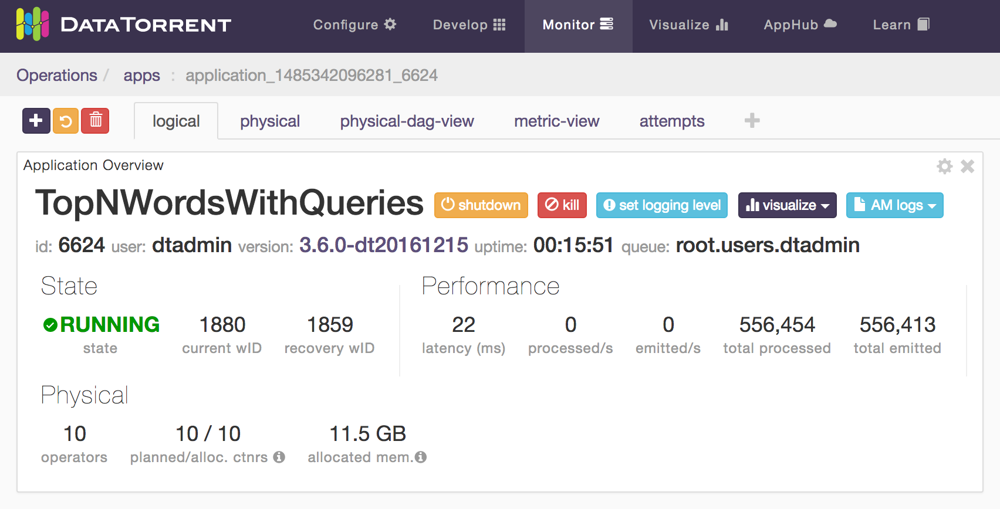
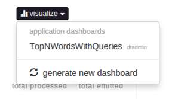
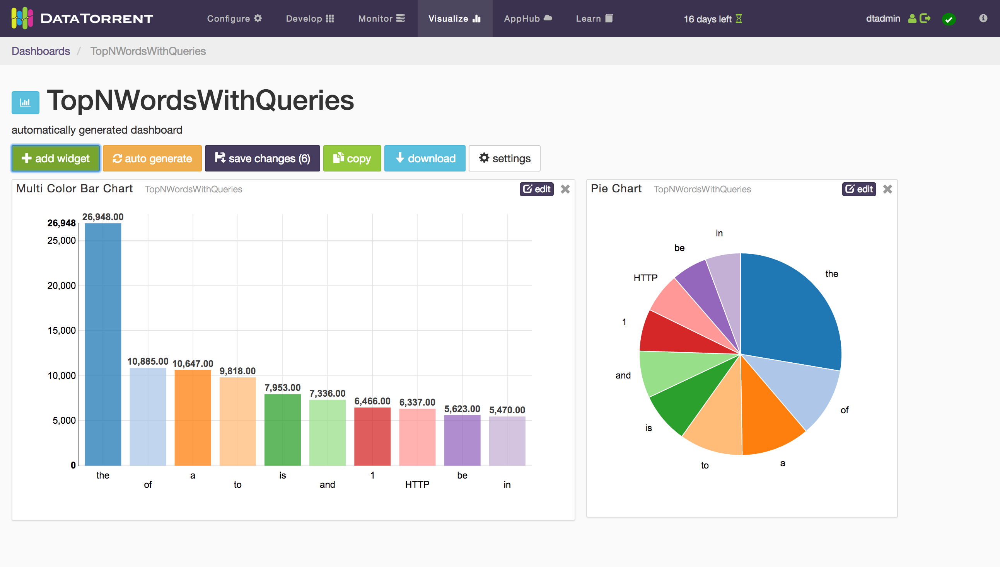
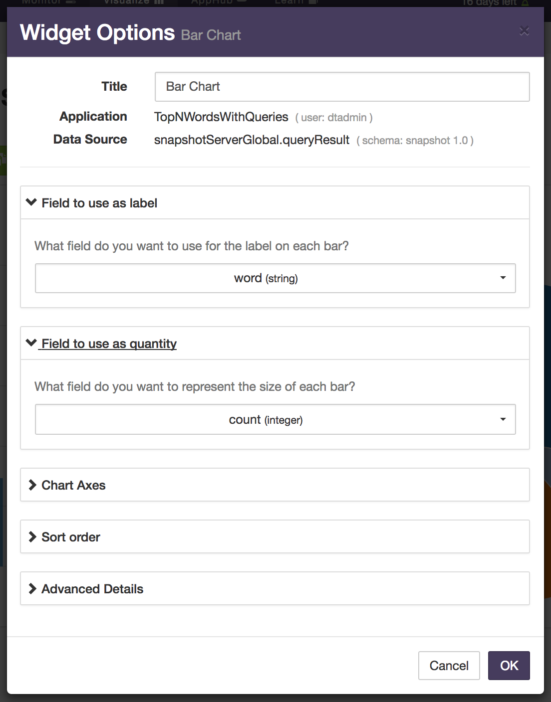
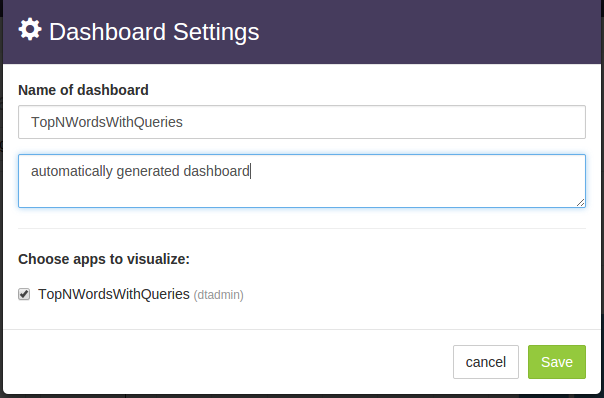
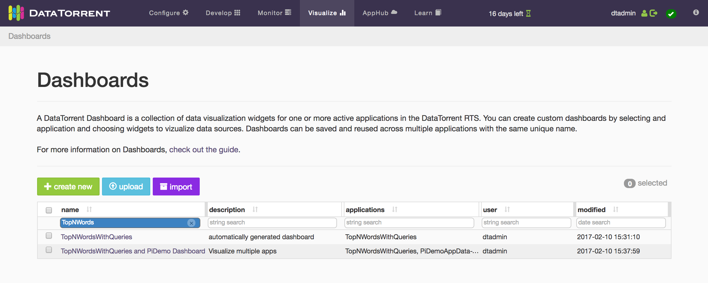
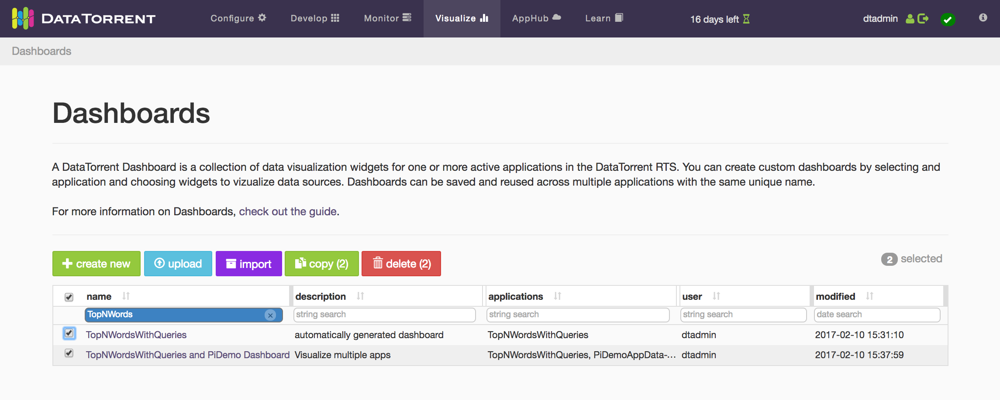

Visualizing the application output using dtDashboard
This chapter covers how to add input files to the monitored input directory and visualize the output.
When adding files, it is important to add only one file at a time to the monitored input directory; the application, as it stands, cannot handle simultaneous addition of files at a time into the input directory. This issue is discussed in more detail in the Appendix entitled Further Explorations.
Note: If you are have trouble with any of the following steps, or have not complete the preceding sections in this tutorial, you can import Word Count Demo from AppHub. The Word Count Demo Application Package contains the TopNWordsWithQueries Application.
Step I: Add files to the monitored directory
To add the files to the monitored input directory
- Log on to the Datatorrent Console (the default username and password are
both
dtadmin). - On the top navigation bar, click Monitor.
- Click TopNWordsWithQueries to see a page with four tabs: logical, physical, physical-dag-view, and metric-view.
- Click the logical tab and make sure that the DAG is visible.
- Create the input and output directories in HDFS and drop a file into the
input directory by running the following commands:
hdfs dfs -mkdir -p /tmp/test/input-dir hdfs dfs -mkdir -p /tmp/test/output-dir hdfs dfs -put ~/data/rfc4844.txt /tmp/test/input-dir
You should now see some numbers above and below some of the operators as the lines of the file are read and tuples start flowing through the DAG.
You can view the top 10 words and the frequencies for each input file by examining the corresponding output file in the output directory, for example:
hdfs dfs -cat /tmp/test/output-dir/rfc4844.txt
For operating on these input and output directories, you may find the following shell aliases and functions useful:
in=/tmp/test/input-dir
out=/tmp/test/output-dir
alias ls-input="hdfs dfs -ls $in"
alias ls-output="hdfs dfs -ls $out"
alias clean-input="hdfs dfs -rm $in/\*"
alias clean-output="hdfs dfs -rm $out/\*"
function put-file ( ) {
hdfs dfs -put "$1" "$in"
}
function get-file ( ) {
hdfs dfs -get "$out/$1" "$1".out
}
Put them in a file called, say, aliases and read them into your shell with:
source aliases.
Thereafter, you can list contents of the input and output directories with
ls-input and ls-output, remove all files from them with clean-input and
clean-output, drop an input file foo.txt into the input directory with
put-file foo.txt and finally, retrieve the corresponding output file with
get-file foo.txt.
Note: When you list files in the output directory, their sizes might show as 0 but if you retrieve them with get-file or catenate them, the expected output will be present.
Step II: Visualize the results by generating dashboards
To generate dashboards
- Perform step I above.
- Make sure that the logical tab is selected and the Application Overview
panel is visible.
 - Click visualize to see a dropdown containing previously created dashboards
(if any), as well as the generate new dashboard entry.
 -
Select the generate new dashboard entry.
You should now see panels with charts where one chart displays the data for the current file and a second chart displays the cumulative global data across all files processed so far. 
-
Add more files, one at a time, to the input directory as described in step I above.
- Observe the charts changing to reflect the new data.
You can create multiple dashboards in this manner for visualizing the output from different applications or from the same application in different ways.
Step III: Add widgets
To derive more value out of application dashboards, you can add widgets to the dashboards. Widgets are charts in addition to the default charts that you can see on the dashboard. DataTorrent RTS Sandbox supports 5 widgets: bar chart, pie chart, horizontal bar chart, table, and note.
To add a widget
- Generate a dashboard by following instructions of Step II above.
- Click the add widget button below the name of the dashboard.
- In the Data Source list, select a data source for your widget.
-
Select a widget type under Available Widgets.

-
Click add widget.
The widget is added to your dashboard.
Step IV: Configure a widget
After you add a widget to your dashboard, you can configure it at any time. Each widget has a title that appears in gray. If you hover over the title, the pointer changes to a hand.
To configure a widget
- To change the size of the widget, click the border of the widget, and resize it.
- To move the widget around, click the widget, and drag it to the desired position.
- To change the title and other properties, click the edit button in the top-right corner of the widget.  You can now enter a new title in the Title box or configure the rest of the options in any suitable way.
- Click OK.
- To remove a widget, click the delete (x) button in the top-right corner of the widget.
Perform additional tasks on dashboards
At any time, you can change the name and the description of a dashboard. You can also delete dashboards.
To perform additional tasks
- Ensure that you generated a dashboard as described in Step II above and select it.
- Click settings button (next to buttons named add widget, auto generate, and save settings), below the name of the dashboard to see the Dashboard Settings dialog: 
- Type a new name for the dashboard in the Name of dashboard box.
- Type a suitable description in the box below.
- Make sure that TopNWordsWithQueries is selected under Choose apps to visualize.
- Click Save.
Delete a dashboard
You can delete a dashboard at any time.
- Log on to the DataTorrent Console (default username and password are both
dtadmin) - On the top navigation bar, click Visualize.
-
Select a dashboard.

-
Click delete.

Note: The delete button becomes visible only if one or more rows are selected.